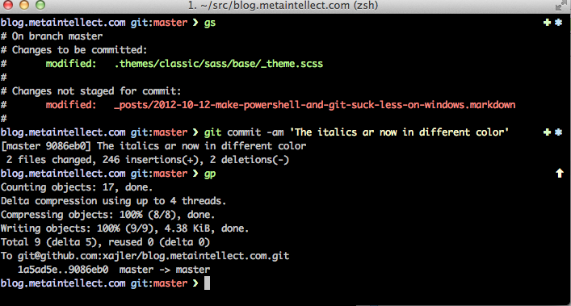
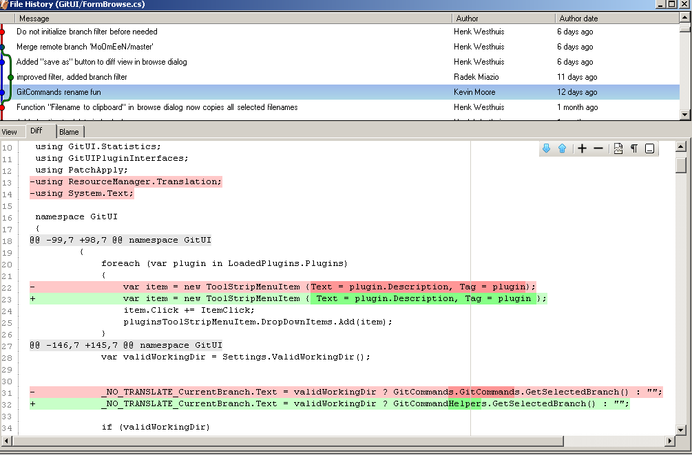

Intro to Git
Who am I?
What even is git?
A distrubuted version control system

A program we run via the command-line...
Or with a user-interface.
What does Git do?
It manages the source code for your project

It talks to remote repositories

Two main functions
1. Version Control
Save progress
Safely experiment
Go back to an earlier state
2. Collaboration
Make changes to the same project
Get feedback
Contribute to work belonging to other people
Part 1
Git on your computer
git init, git status, git add, git commit
Initialising git
$ git init
Everything happens inside a repository
repo = folder
Once you turn on git, it is ALWAYS WATCHING
git status shows you what git can see
git init initialises your git repository
i.e. tells git to track what you do inside that folder
such as creating new files
making changes to files
deleting files
etc.
beware gitception
Introducing Commits
Git is always watching...
But you need to tell it to remember what you've done
Omniscient Elephant
A commit is a snapshot of changes
workflow
AKA the commands you type and in which order
- INITIALISE git
- Check the STATUS of git
- ADD changes to the staging area
- COMMIT changes
$git add .
$git commit -m "Initial commit"
When to commit?
$git tag
What's the point?
$git log
Break everything
Put it back to how it looked before you ruined it
Rewrite history
Part 2
Git for the outside world
git push
Share your work with the world
Or back it up for yourself
git push whereto whichbranch
$ git push origin master
git pull
Get the latest changes
Workflow
Pushing your work to a remote repository
$git init
$git add "README.txt"
$git commit -m "Initial commit"
(Create GitHub repo)
$git remote add origin [url]
$git push origin master
Contributing to somone else's work
$git clone [url]
$git pull
*do work*
(lots of git add, git commit)
$git push
$git merge
Gotcha: .gitignore
Part 3
Branches
$ git branch NAMEOFBRANCH
$ git checkout NAMEOFBRANCH
$ git checkout -b NEWBRANCH

$ git checkout master
$ git merge NEWBRANCH

Recap
Before you do work:
git init OR git clone OR git pull
Do work
After you do work:
git add "this.txt", git commit -m "Add this"
You did good work, show somebody:
git push origin mybranch